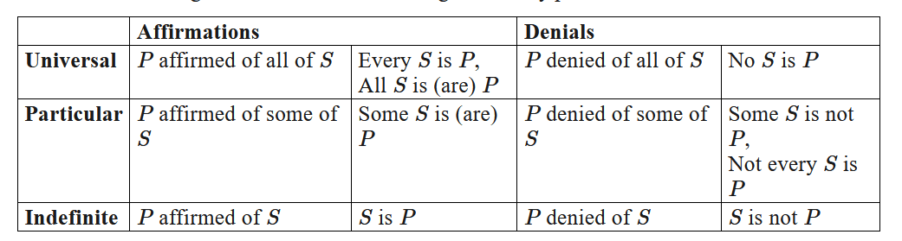

The Axioms Of Classical Logic And Choosing The Best Foundationalist System
Table of Contents
- 1. The Axioms of Classical Logic
- 2. What Axioms Are And What They Are Used For
- 3. The Rules Of Inference
- 4. Further Analysis On Foundations And Axiomatic Systems
- 5. Verifying Questionable Performative Contradictions
- 6. How Should We Prove The Validity Of Reason?
- 7. The Advantages Of This Axiomatic System For Philosophy
1. The Axioms of Classical Logic
Epilogue: How the Axioms of Classical Logic were Created/Derived
- The Law of Identity
- Metaphysically: “A is A” or “Anything is itself.”
- For Propositions: “If a proposition is true, then it is true.”
- The Law of The Excluded Middle:
- Metaphysically: “Anything is either A or NOT_A.”
- For Propositions: “A proposition, such as P, is either true or false.”
- The Law of Non-Contradiction:
- Metaphysically: “Nothing can be both A and NOT_A.”
- For Propositions: “A proposition, P, can not be both true and false.”
Explained: All of our syllogisms rely on these laws - that any thing is equal to itself, that tautologies must be true, and that contradictions must be false. Classical logic holds that everything has a definite, non-contradictory nature. A metaphysical law of identity would hold that to be perceived or even exist at all it must have a definite, non-contradictory nature.
Classical Logic Operations: Logical Connectives (AND, OR, NOT), Conditional, Biconditional, Modus Ponens, ∀, ∃
Some people might argue that it’s useful to have a ternary (three-value) logic that includes a third truth value in addition to just True or False called “Unknown”, but the reason why “Unknown” is generally not included in practice is because “Unknown” can already be expressed in classical logic as “True or False” (e.g. P or ~P), and it’s possible to use multiple conditional statements that depend on whether the condition is True or False. Adding an unnecessary truth value to our logic system would add many additional logic theorems to our theory of knowledge, which we should prefer to avoid since we want our epistemology to be as parsimonious as possible.
2. What Axioms Are And What They Are Used For
- This blog post essay explains it very well: The Laws of Logic Explained by StateOfTheNihil.
- “By thinking about order of discovery and understanding that we were already making arguments before having a concept of the logical laws, we can ask how this was even possible. The answer has to do with the fact that we aren’t capable of violating the laws of logic consciously.”
- “This inability to violate any/most of the laws is first, what allows us to rely on them prior to conceiving of the laws themselves, but is, second, what makes the laws of logic not arbitrary.”
- The Laws of Logic are basically patterns in cognition, suggesting that we simply think in this way when we reason.
- Definition of Logical Axiom/Postulate: An axiom or postulate is a statement that is taken to be true, to serve as a premise or starting point for further reasoning and arguments.
- Logic is the study of valid reasoning. It follows that if we wish to propose a reasonable foundationalist theory of epistemology, we should start by selectively choosing logical ontologies that will yield a logical system that will work best for our purposes.
- For our theory of logic, we will choose classical logic, which has the ontologies of being a two-value logic with existential and universal quantification. If we later discover that we wish to do reasoning that will require additional ontologies like time, possibility, necessity, evidentiality, etc or different ontologies such as additional truth value (e.g. indeterminate in addition to true and false), then we can formulate a different foundationalist theory that reuses and builds upon many of the findings in our classical logic paradigm.
- An axiom is a statement that cannot be proved by reference to any more basic statements, because it provides the most basic conceptual foundation of all proofs.
- Are things that we can sense perceptually self-evident?
- A statement that cannot be proved in any manner, yet is not self-evident, is simply an arbitrary assertion.
- After assuming the three axioms of classical logic, establishing all the inference rules and expanding the performative contradiction theorems beyond just existence and consciousness, this all looks more like a mathematical axiomatic system.
- The existence axiom cannot prove the existence of anything besides oneself though, but that is okay. The existence of other things besides oneself can be proven once the validity of the senses are proven.
2.1. Characteristics Of Logical Axioms (Postulates)
- The Three Axioms of Classical Logic
- Postulates taken to be True
- Satisfies the Definition of Law
- Has both metaphysical and propositional equivalents
- Required to Prove the Inference Rules and Performative Contradiction Theorems
- Can Prove the Inference Rules and Other Tools of Classical Logic
3. The Rules Of Inference
i

4. Further Analysis On Foundations And Axiomatic Systems
- Perhaps the brain implicitly assumes axioms so often for multiple reasons: 1. it isn’t programmed to recognize them unless it’s looking for them, 2. it probably speeds up mental calculations if one doesn’t consciously realize them (but this becomes a bad thing when you must recognize them), and 3. the brain tends to subconsciously create assumptions to uphold its coherentist belief system, even if that is actually fallacious reasoning.
- Interestingly, the order in which axioms are listed matters. It would not make sense to establish the Identity Axiom after the Law of Non-Contradiction.
- The reason for this is probably because the previous axioms state concepts that the later axioms have to refer to.
- So when the previous axioms are missing, it’s confusing what the later axioms are talking about.
- Non-logical axioms (postulates) are formulas that play the role of theory-specific assumptions. Reasoning about two different structures, for example the natural numbers and the integers, may involve the same logical axioms; the non-logical axioms aim to capture what is special about a particular structure (or set of structures, such as groups). Thus non-logical axioms, unlike logical axioms, are not tautologies. Another name for a non-logical axiom is postulate.
- “Axiomatic” implies that axioms often tend to be things that people implicitly assume since they’re used so much.
- Almost every modern mathematical theory starts from a given set of non-logical axioms.
- It has been thought that in principle every theory could be axiomatized in this way and formalized down to the bare language of logical formulas.
5. Verifying Questionable Performative Contradictions
- Are these true performative contradiction? By saying “I”, you imply that you exist. So if your conclusion is that you exist, you kind of assume what you’re trying to prove.
- Either you exist, or you don’t exist. It must be the case that you do exist, because if you didn’t exist, you never could have stated that you don’t exist in the first place.
- Whenever you’re given two contradicting statements, you have to pick the one that remains consistent with reality: the one that doesn’t lead you down a dead end.
- Rejecting any Axiom is a performative contradiction. If this is true, then the entire list of performative contradictions is also a list of axioms.
- That said, you have to choose: I do exist. I am conscious. I am alive. If you reject these three options, then you lead yourself down a philosophical dead end that is inconsistent with reality.
- As additional proof that you’re supposed to reject the propositions being said, You clearly do that when disproving: skepticism/solipsism, the invalidity of reason, and all statements are false.
- Why would it be any different that you accept the propositions being said and reject the implicit premises that are not stated, instead of accepting the implicit premises and rejecting the assertions?
- We know that this cannot be the case because which premise/assertion gets accepted and which one gets rejected has to be the same for all of the performative contradictions.
6. How Should We Prove The Validity Of Reason?
- A question that is worth asking is: Should reason be self-justified? (by proof by performative contradiction among other ways) Or should reason be accepted as an axiom in this foundationalist theory?
- My intuition is that Reason can and should be used to justify itself because it is valid, but some people would still disagree and argue that reason would have to be accepted as an axiom in this foundationalist theory. Even if it is debatable whether or not the validity of reason should be included as an axiom in this foundationalist theory of epistemology, using reason to debate the inclusion of this axiom is nothing new. Many, many other mathematical theories also use reason and debates to concretely decide the axioms that lay the foundations for those theories.
- If it should be the case that reason cannot justify itself by performative contradiction, it would also have to be the case that reason cannot be justified by any means at all. We wouldn’t be able to justify reason using biological and evolutionary reasoning, nor could we justify reasoning by any other mental faculties (faith, emotion, imagination (relies on reasoning), intuition (relies on reasoning)) since all of them are either invalid or end up using reason indirectly in some way, nor could we even conclude that reason has to be valid since it’s the only other possible mental faculty available that could possibly prove the validity of reason (once again, reason would have to be used to justify itself, but it was already assumed that we can’t do this when we ruled out proof by performative contradiction).
- Anyway, the point here was that if reason cannot justify itself as being a valid source of knowledge, much less the only one, then it is completely impossible to justify it at all, unless it is taken to be a self-evident axiom. But even then, the very act of deciding and choosing which axioms to include in a belief system is in of itself an act of using reason, which further bolsters the self-evidence that reason is valid. Although we want the total number of axioms that we assume for any foundationalist system to be as few as possible, and while I don’t believe that it’s necessary to assume the validity of reason as an axiom, it certainly wouldn’t be problematic at all to do so since the validity of reason is true, self-evident, self-justifying, and wholly consistent with our epistemic theory. It ultimately comes down to personal preference regarding whether someone wants to assume the validity of reason as an axiom or prove reason by performative contradiction and other self-justifying means. All the conclusions built on top of the founding axioms and performative contradiction theorems will be the same.
7. The Advantages Of This Axiomatic System For Philosophy
- Since these are the exact same axioms used for classical logic, establishing them also unlocks all the inference rules, makes classical logic possible, and enables me to use Proof by Contradiction.
- These three axioms also have equivalents regarding reality and metaphysics, so they can be used for more than just logic and propositions.
- These axioms are required to be able to use Proof by Contradiction, which is necessary for showing that Performative Contradictions are contradictions.
- Unlocking the collection of all Performative Contradictions verifies several self-evident, yet important philosophical theorems.
- I do exist, I am conscious, I am alive, I have conscious epistemic free will, I can be certain of some things, I should have values, and reason is a valid source of sensory knowledge.
- Although the conclusions derived from the Performative Contradictions may be self-evident, proving them by Contradiction enables us to avoid relying on self-evidence for knowing that they are true.
- This proves that reason is a valid source of knowledge. This is a big deal because not only is reason a valid source of sensory knowledge, but it’s the only valid source of sensory knowledge, and we will prove that later.
- Once reason is established, classical logic can be used in combination to strengthen our reasoning since we managed to establish it using the three axioms.
- All of this makes a perfect epistemic foundation for learning metaphysics and epistemology in more depth.
- And once we learn the basics, we’ll also be able to prove that the universe is cause-and-effect and deterministic, the senses are valid, empiricism is true, learn how evolution works, identify cognitive biases and limits of knowledge, and move on to ethics and the rest of philosophy.
- Once I prove all of this as well, I can use the newly established knowledge (e.g. evolution, the evolution theorems and, etc) to re-affirm all the performative contradiction theorems established here, so the structure of this theory of epistemology will ultimately be shown to follow (Empirically-Grounded) Coherentism, not Foundationalism.